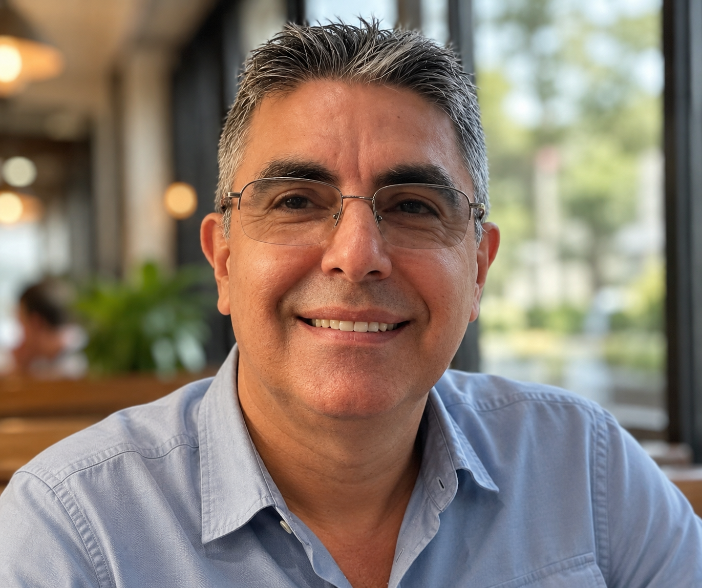

Raul Ranilla Cateriano

A natural leader, a gifted cook, and a lifelong champion of family.
Uncle Raul is someone who has always left a lasting impression on those around him. Whether through his leadership, his sense of humor, or his passion for bringing people together, he has always been an important part of our family's story. He is the kind of person people naturally gravitate toward. Cheerful, welcoming, full of stories, and always ready to bring family and friends together around a great meal, he has remained a constant presence throughout many of the most important moments in our family's history.
As the oldest of the Ranilla Cateriano siblings, he carried important responsibilities from an early age. After my grandfather Raul stepped away from the day-to-day operations of the family business, Uncle Raul took on the challenge of managing the family supermarket in Camaná, Arequipa. At the time, the business was much more than a supermarket. It was a source of livelihood for the family, and many of his younger brothers and sisters depended on its success. Through hard work, discipline, and strong leadership, he helped the business continue to grow and prosper. Looking back, it is clear that he had a natural talent for administration, management, and understanding how to lead people.
Like many members of the Ranilla family, he later immigrated to the United States and settled in Miami, Florida, with his family. He approached this new chapter of life with the same determination and work ethic that had served him so well in Peru. He continued building a career in the restaurant industry, managing Peruvian restaurants and applying the skills he had developed over many years. In many ways, his success in restaurant management came as no surprise. He has always had a remarkable ability to organize, lead, and create an environment where people feel welcome.
One thing I have often thought about over the years is how successful Uncle Raul could have been with a restaurant of his own. Given his experience in restaurant management and his remarkable talent for cooking, it always seemed like a natural fit. Whether or not that was ever part of his plans, there is no doubt that he possesses the skills, passion, and dedication that could have made it a success.
His lomo saltado is one of the best I have ever tasted, and many of the dishes he has prepared over the years remain unforgettable to me. The flavor, the attention to detail, and the pride he puts into every meal are impossible to miss. Cooking is not simply something he enjoys doing. It is one of his natural talents.
Beyond his professional accomplishments and culinary talents, what stands out most is his connection to family. He has always been present during important gatherings, celebrations, and milestones. Even now, he is often asking when we are finally coming back to Miami to visit. That genuine interest in staying connected and keeping the family close says a great deal about the kind of person he is.
To me, Uncle Raul represents leadership, hospitality, perseverance, and family unity. From helping guide the family business in Peru, to building a new life in the United States, to bringing loved ones together around a table filled with great food, he has always led with generosity, warmth, and a sincere love for family. His story is one of hard work, resilience, and the lasting impact that one person can have on the people around him.